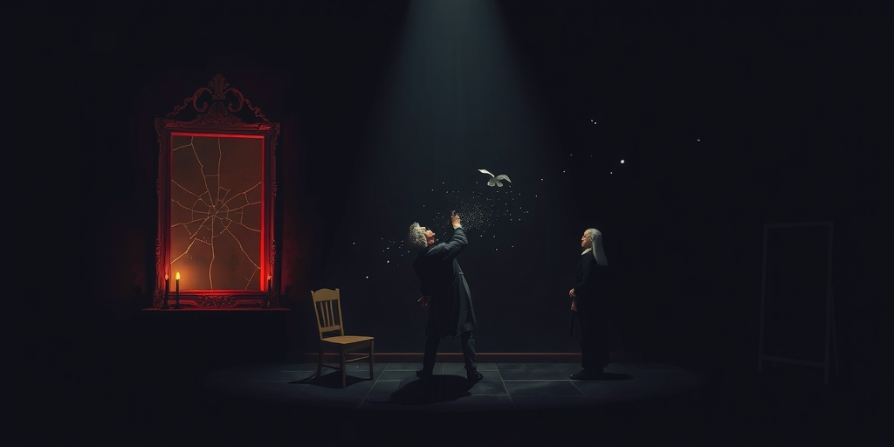
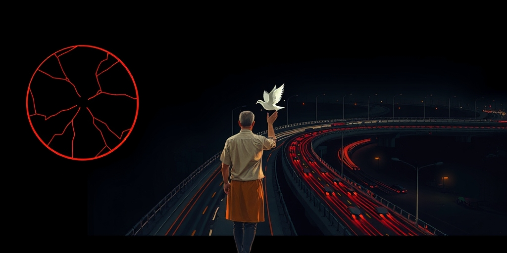
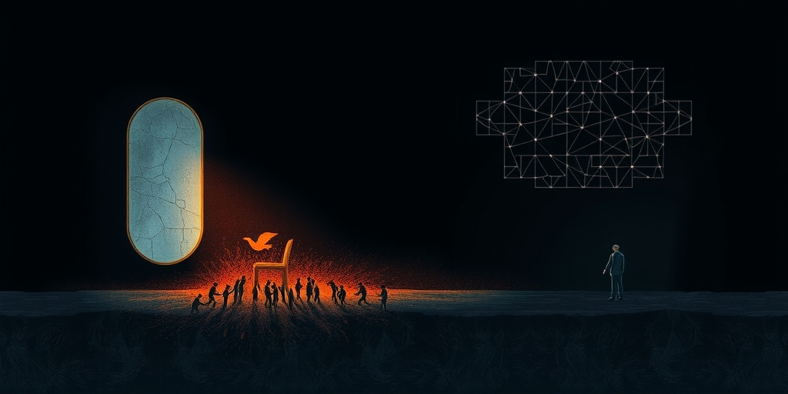
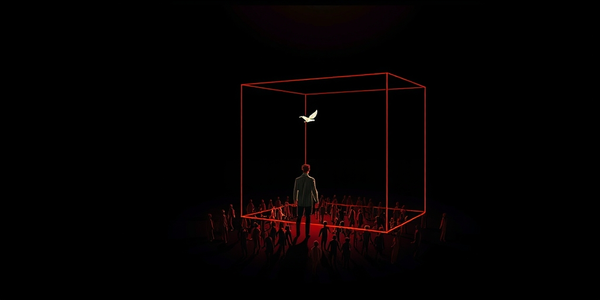

小汪老师的成长洞察 · 属于你的成长专栏
你无法预测任何一个空气分子下一秒会撞向哪里。但气压表的指针永远稳如磐石。微观的彻底混沌与宏观的精确稳定同时成立，这可能就是人类社会秩序最深层的物理钥匙。

A dimly lit 18th-century study, a man in a powdered wig sketching chaotic particle trajectories on a chalkboard, while three other scholars turn away dismissively. Faint glowing particles float in the air, mocking the unseen.

A dark aerial view of a massive urban expressway at night, headlights forming a steady stream of red and white light rivers. In the foreground, a faint glowing digital gauge shows a stable traffic index, the whole scene bathed in deep indigo and amber.
A surreal close-up of a giant analog pressure gauge, its face cracked slightly. Beneath the glass, instead of a dial mechanism, a chaotic dance of millions of tiny glowing particles pounds against the inner surface. The scene is dark with cold metallic tones and a single red indicator needle.

A layered visual composition: the bottom layer shows a blurred, chaotic tangle of tiny human figures, all moving randomly. The top layer reveals a sharp, clear geometric pattern emerging from their collective motion, like a crystalline lattice formed from dust. Deep shadows separate the layers, lit by a cool, analytical light from above.

A vast dark space filled with a transparent geometric container made of faintly glowing lines, like a cage of light. Inside, countless abstract humanoid figures move freely, but the overall flow is shaped by the container's curves. A single distant light source casts the container's shadow as a perfect, orderly pattern on the floor.
写给你的话
所以，当我们谈论“改变社会”时，到底应该从哪个层面着手？改变一千个人的行为，还是改变这些人所处的容器形状？气体分子运动论的答案是第二个。但第二个的难度大得多——它要求你不再沉迷于个体的故事，而是去理解那个无形的、由规则和结构铸成的器壁。下一次你看到某个社会指标纹丝不动而身边一切都在剧变时，也许可以想一想那个气压表，和它背后乱跑的无数分子。
参考资料
• The Economic Times: Psychology suggests reason so many older parents won’t ask for help is a fear they’d never say aloud (Jun 2026)
• The Economic Times: In 1971, volunteers entered a mock prison basement and sparked one of psychology’s biggest debates (Jun 2026)
小汪老师的成长洞察 · 属于你的成长专栏